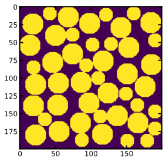
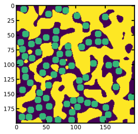

Generating polydisperse spheres using RSA¶
[1]:
import numpy as np
import porespy as ps
import matplotlib.pyplot as plt
ps.visualization.set_mpl_style()
np.random.seed(10)
The RSA generator works differently than most of the other ones, in that it requires a pre-existing image be passed as an argument. The RSA function will then add spheres of the specified size to False locations of this received image until the total volume fraction of the image reaches the specified value. This workflow was used so that increasingly smaller spheres could be added to the image to create a polydisperse packing, or to insert spheres into an image of blobs for instance.
[2]:
im = np.zeros([200, 200])
im = ps.generators.RSA(im, r=15)
im = ps.generators.RSA(im, r=10)
[3]:
fig, ax = plt.subplots()
ax.imshow(im);

[4]:
im = ps.generators.blobs(shape=[200, 200])
im_with_spheres = ps.generators.RSA(im, r=6)
fig, ax = plt.subplots()
ax.imshow(im_with_spheres + 0.5*im);
